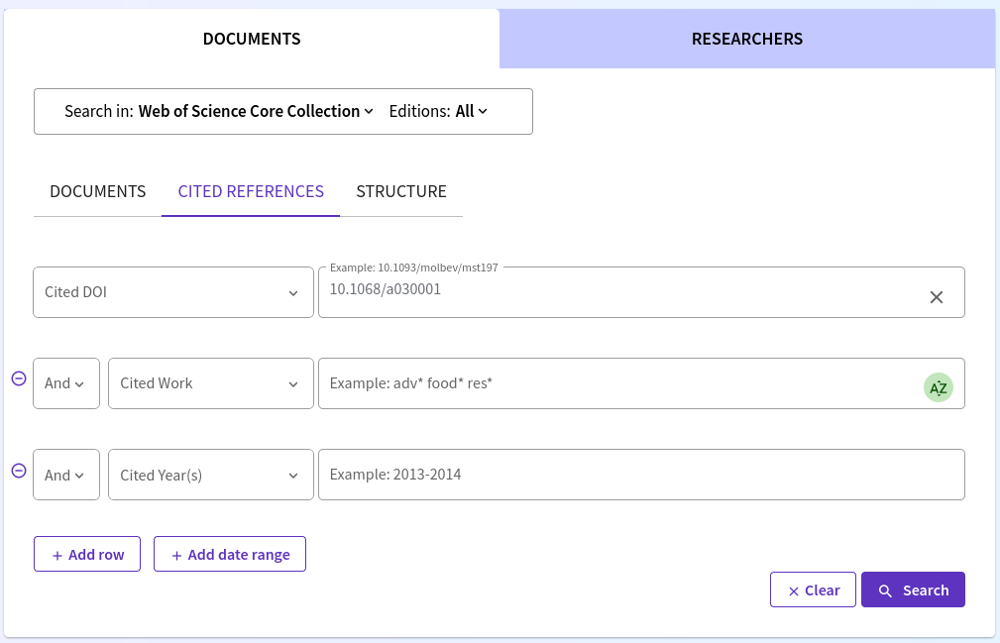

In the paper we make the argument that research on accessibility diverged from research on spatial interaction modelling, especially after Wilson’s landmark paper “A family of spatial interaction models”, and that this is one of the reasons was the notion of proportionality constants that vanished between Stewart and Hansen was never fully recovered, despite being key to Wilson’s approach to spatial interaction.
Out of curiosity, it would be interesting to see how often Wilson is cited in the literature on accessibility, and how much overlap there is with citations to Hansen.
To this end, we completed a search using the Web of Science Core Collection. We used the “CITED REFERENCES” function, and searched by DOI, as follows:
Hansen WG (1959) How Accessibility Shapes Land Use. doi:10.1080/01944365908978307
Wilson AG (1971) A Family of Spatial Interaction Models, and Associated Developments. doi:10.1068/a030001

The search was conducted on November 9, 2024.
This search retrieved 2,134 documents that cite Hansen’s paper and 368 documents that cite Wilson’s paper.
The documents that cite these two papers were downloaded (in the case of Hanson in batches, because of a limit of 500 documents per export). The records were exported EndNote Desktop format, and the Record Contents were “Full Record and Cited References”.
The resulting files were saved to folder data-raw/:
hansen_01.ciw (records 1-500)
hansen_01.ciw (records 501-1000)
hansen_01.ciw (records 1001-1500)
hansen_01.ciw (records 1501-2000)
hansen_01.ciw (records 2001-2134)
wilson.ciw (records 1-368)
Preliminaries
For this piece of analysis, we will use package {bibliometrix}
Warning: package 'bibliometrix' was built under R version 4.4.2
Please note that our software is open source and available for use, distributed under the MIT license.
When it is used in a publication, we ask that authors properly cite the following reference:
Aria, M. & Cuccurullo, C. (2017) bibliometrix: An R-tool for comprehensive science mapping analysis,
Journal of Informetrics, 11(4), pp 959-975, Elsevier.
Failure to properly cite the software is considered a violation of the license.
For information and bug reports:
- Take a look at https://www.bibliometrix.org
- Send an email to info@bibliometrix.org
- Write a post on https://github.com/massimoaria/bibliometrix/issues
Help us to keep Bibliometrix and Biblioshiny free to download and use by contributing with a small donation to support our research team (https://bibliometrix.org/donate.html)
To start with the Biblioshiny app, please digit:
biblioshiny()
library(dplyr) # A Grammar of Data Manipulation
Attaching package: 'dplyr'
The following objects are masked from 'package:stats':
filter, lag
The following objects are masked from 'package:base':
intersect, setdiff, setequal, union
library(ggplot2) # Create Elegant Data Visualisations Using the Grammar of Graphicslibrary(ggraph) # An Implementation of Grammar of Graphics for Graphs and Networkslibrary(glue) # Interpreted String Literals
Attaching package: 'glue'
The following object is masked from 'package:bibliometrix':
trim
library(here) # A Simpler Way to Find Your Files
here() starts at /home/antonio-paez/antonio-rogue/Cases-2024/Family-of-accessibility-measures
library(stringr) # Simple, Consistent Wrappers for Common String Operations
Read the bibliometric data
Read the bibliography that cites Hanson and collect in a single data frame:
Converting your wos collection into a bibliographic dataframe
Warning:
In your file, some mandatory metadata are missing. Bibliometrix functions may not work properly!
Please, take a look at the vignettes:
- 'Data Importing and Converting' (https://www.bibliometrix.org/vignettes/Data-Importing-and-Converting.html)
- 'A brief introduction to bibliometrix' (https://www.bibliometrix.org/vignettes/Introduction_to_bibliometrix.html)
Missing fields: DE
Done!
Generating affiliation field tag AU_UN from C1: Done!
Retrieve the documents cited in the two sets of references:
hansen_citations <-citations(hansen, field ="article", sep =";")wilson_citations <-citations(wilson, field ="article", sep =";")
As expected, the most cited paper in the hansen corpus is Hansen, since the corpus was selected by this criterion. At most, the number of citations to another article could have been a tie, but it is not close:
cbind(hansen_citations$Cited[1:10])
[,1]
HANSEN WG, 1959, J AM I PLANNERS, V25, P73, DOI 10.1080/01944365908978307 2026
GEURS K.T., 2004, JOURNAL OF TRANSPORT GEOGRAPHY, V12, P127, DOI 10.1016/J.JTRANGEO.2003.10.005, DOI 10.1016/J.JTRANGEO.2003.10.005 680
HANDY SL, 1997, ENVIRON PLANN A, V29, P1175, DOI 10.1068/A291175 403
KWAN MP, 1998, GEOGR ANAL, V30, P191, DOI 10.1111/J.1538-4632.1998.TB00396.X 220
INGRAM DR, 1971, REG STUD, V5, P101, DOI 10.1080/09595237100185131 214
LUO W, 2003, ENVIRON PLANN B, V30, P865, DOI 10.1068/B29120 205
MORRIS JM, 1979, TRANSPORT RES A-POL, V13, P91, DOI 10.1016/0191-2607(79)90012-8 195
PÁEZ A, 2012, J TRANSP GEOGR, V25, P141, DOI 10.1016/J.JTRANGEO.2012.03.016 184
WACHS M, 1973, SOCIO ECON PLAN SCI, V7, P437, DOI 10.1016/0038-0121(73)90041-4 168
SHEN Q, 1998, ENVIRON PLANN B, V25, P345, DOI 10.1068/B250345 161
The next most cited paper after Hansen is Geurs (2004) with 680 citations.
Again, as expected, the most cited paper in the wilson corpus is Wilson, since the corpus was selected by this criterion. At most, the number of citations to another article could have been a tie, but it is not close:
cbind(wilson_citations$Cited[1:10])
[,1]
WILSON AG, 1971, ENVIRON PLANN, V3, P1, DOI 10.1068/A030001 334
HANSEN WG, 1959, J AM I PLANNERS, V25, P73, DOI 10.1080/01944365908978307 76
ALAN WILSON A., 1970, ENTROPY IN URBAN AND REGIONAL MODELLING 54
WILSON AG, 1967, TRANSPORT RES, V1, P253, DOI 10.1016/0041-1647(67)90035-4 52
FOTHERINGHAM AS., 1989, SPATIAL INTERACTION 39
FOTHERINGHAM AS, 1983, ENVIRON PLANN A, V15, P15, DOI 10.1068/A150015 37
GEURS K.T., 2004, JOURNAL OF TRANSPORT GEOGRAPHY, V12, P127, DOI 10.1016/J.JTRANGEO.2003.10.005, DOI 10.1016/J.JTRANGEO.2003.10.005 37
HANDY SL, 1997, ENVIRON PLANN A, V29, P1175, DOI 10.1068/A291175 33
SHEN Q, 1998, ENVIRON PLANN B, V25, P345, DOI 10.1068/B250345 32
INGRAM DR, 1971, REG STUD, V5, P101, DOI 10.1080/09595237100185131 25
The next most cited paper is Hansen, with 76 citations.
Add a column to the data frames to uniquely identify the documents in each corpus: